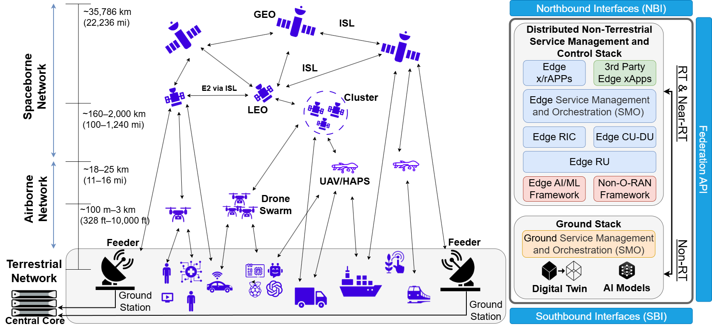

THRUST 01
System Architecture & O-RAN for NTN
Design L/S-band satellite radio hardware and fronthaul, predictive/cooperative beamforming, NTN-aware RU/DU/CU splits, and RIC control for orbital delay, Doppler and mobility.
NTN-ready Open RAN, L/S-band satellite radio hardware, predictive beamforming, intelligent control and distributed edge computing.
Three coordinated thrusts take the work from open architecture to integrated system-level validation.
Design L/S-band satellite radio hardware and fronthaul, predictive/cooperative beamforming, NTN-aware RU/DU/CU splits, and RIC control for orbital delay, Doppler and mobility.
Develop compute-aware service models, Near-RT xApps and Non-RT rApps for predictive slicing, workload placement and edge offloading.
Integrate the full NTN O-RAN stack across mission-driven scenarios, validate KPIs and demonstrate interoperability across heterogeneous nodes.
Layered network topology and distributed service management architecture.

The project’s task structure, from L/S-band RU engineering and beamforming to compute-aware RIC intelligence and final integration. All months and activities are planned.
Foundation of the interoperable space–air–ground RAN, including the physical satellite radio hardware and its flight-integration pathway.
Planned subtasks
Planned subtasks
Planned subtasks
Planned subtasks
Planned subtasks
Extend Open RAN intelligence from communication-only control to joint radio, computing and energy awareness.
Planned subtasks
Planned subtasks
Planned subtasks
Co-design and assess the research through aerial access, direct-to-cell NTN and distributed UAV edge computing.
Integration and validation activities follow the use-case and demonstration plans.
Planned UC2 work includes CubeSat-class radio/payload integration; L/S-band RF, onboard RU/DU/CU and fronthaul interfaces; NTN timing and Doppler compensation; predictive beamforming; and direct-to-cell testing with user equipment. Verification proceeds through laboratory, flat-sat, and hardware-in-the-loop environments, with any on-orbit demonstration conditional on platform qualification and a flight opportunity.
Integration and validation activities follow the use-case and demonstration plans.
Integration and validation activities follow the use-case and demonstration plans.
Eleven enabling technical directions spanning O²-RAN software, L/S-band and CubeSat-class hardware, satellite and aerial networking, intelligent control, edge computing, and integrated experimental validation.
From system specification to functioning software and satellite-capable radio payloads.
NTN-aware functional splits, open interfaces, synchronization, timing, mobility and architectural adaptations for integrated space–air–ground networks.
Develop NTN-ready L/S-band radio units, RF front ends, Doppler compensation, fronthaul and satellite-compatible hardware interfaces.
Design satellite electrical and mechanical interfaces, SWaP-aware packaging, thermal management, radiation/EMI shielding considerations, and CubeSat-class payload integration and testing.
Develop LEO-to-user and multi-node satellite/UAV beam prediction, coordinated transmissions, Doppler-aware beam control and interference management.
Make communication, computing, mobility and network control work together.
Extend E2SM-KPM, E2SM-RC, A1 and O1/O2 to incorporate compute telemetry, offloading actions and communication–computation guardrails.
Cross-platform experimental capabilities for satellite, aerial and terrestrial networking. The three application scenarios are described separately on the Use Cases page.
Develop 5G NR-NTN and 6G-oriented satellite radio access for LEO/CubeSat-class platforms, with regenerative connectivity, Doppler and timing adaptation, beam and mobility management, and interoperability with terrestrial networks and user devices.
Integrate and evaluate satellite/CubeSat-class radio payloads, UAV platforms, the O²-RAN software stack and ground MEC through emulation, hardware-in-the-loop testing, field experiments, and space–air–ground demonstrations. Evaluate latency, reliability, mobility, scalability and compute performance.
All described work is planned research. Satellite flight deployment is dependent on hardware qualification and flight opportunities. Browse the detailed task plan and schedule →